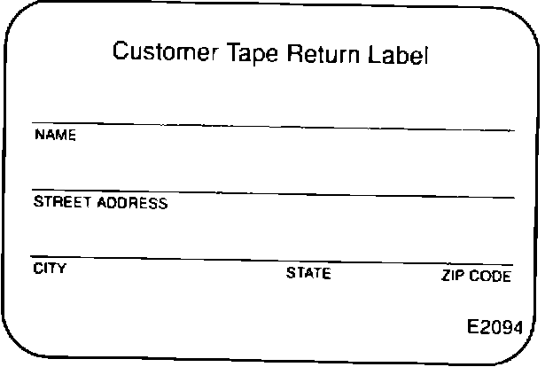

Tape Player - Will Either Not Accept or Eject a Tape
90acura02YEAR MODEL VIN APPLICATION
1990 LEGEND 4-Dr, STD & L
July 23, 1990
BULLETIN NO
90-015
Legend Tape Player Operation
SYMPTOM
Tape player will either not accept a tape, or will not eject a tape.
PROBABLE CAUSE
The photoreflector is defective; this part senses whether or not there is a tape in the player.
CORRECTIVE ACTION
1. Exchange the radio. See Service Bulletin 87-015, Radio Exchange Program, issued 1-29-90. If the tape will not eject continue through steps 2 and 3.
NOTE: All replacement radios, shipped through the Radio Exchange Program, will have a redesigned photoreflector regardless of their original defect.
2. If the tape will not eject, do not forcefully remove it. Leave it in the player.

3. Complete a Tape Return Label, reorder # E2094, (included in this mailing) and attach it to the vendor claim form. The tape will be removed during the repair process and the label will be used to send the tape to the customer.
WARRANTY INFORMATION
In warranty: The normal warranty applies.
Out-of-warranty: Any repair performed after warranty expiration may be eligible for goodwill consideration by the District Service Manager. You must request consideration, and get the DSM's decision, before starting work.
Refer to Service Bulletin 87-015, Radio Exchange Program, for complete warranty information.